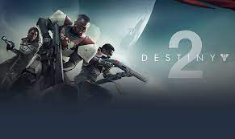

Cyberpunk 2077
Summary: Cyberpunk 2077 is an open-world, action-adventure story set in Night City, a megalopolis obsessed with power, glamour and body modification. Assume the role of V, a mercenary outlaw going after a one-of-a-kind implant that is the key to immortality. You can customize your character’s cyberware, skillset and playstyle, and explore a vast city where the choices you make shape the story and the world around you. Become a cyberpunk, an urban mercenary equipped with cybernetic enhancements and build your legend on the streets of Night City. Take the riskiest job of your life and go after a prototype implant that is the key to immortality
Rating: 84/100
Developer: CD Projekt Red Studio
Genre(s): Action RPG, Role-Playing, Action RPG
Destiny 2
Summary: In Destiny 2, the last safe city on Earth has fallen and lays in ruins, occupied by a powerful new enemy and his elite army, the Red Legion. Every player creates his own character called a “Guardian,” humanity’s chosen protectors. As a Guardian in Destiny 2, players must master new abilities and weapons to reunite the city’s forces, stand together and fight back to reclaim their home. In Destiny 2 players embark on a fresh story filled with new destinations around our solar system to explore, and an expansive amount of activities to discover. There is something for almost every type of gamer in Destiny 2, including gameplay for solo, cooperative and competitive players set within a vast, evolving and exciting universe.
Rating: 83/100
Developer: Bungie Software, Bungie
Genre(s): Action, Shooter, First-Person, Arcade

Grand Theft Auto
Summary: The sprawling sun-soaked metropolis of Los Santos is chock full of self-help coaches, starlets and C-List celebrities, once on top of the media world, now struggling to stay relevant in time of economic malaise and lowest-common-denominator reality TV. Amidst this madness, three unique criminals plan their own chances of survival and success: Franklin, a street-level hustler in search of opportunities for serious money; Michael, an ex-con whose "retirement" is a less rosy than he hoped it would be; and Trevor, a violent dude driven by the chance for a quick high and the next big score. Nearly out of options, the crew risks it all in a series of daring and dangerous heists that could set them up for life - one way or the other.
Rating: 97/100
Developer: Rockstar North
Genre(s): Action Adventure, Modern, Open-World

The Elder Scrolls V: Skyrim
Summary: The next chapter in the Elder Scrolls saga arrives from the Bethesda Game Studios. Skyrim reimagines the open-world fantasy epic, bringing to life a complete virtual world open for you to explore any way you choose. Play any type of character you can imagine, and do whatever you want; the legendary freedom of choice, storytelling, and adventure of The Elder Scrolls is realized like never before. Skyrim's new game engine brings to life a complete virtual world with rolling clouds, rugged mountains, bustling cities, lush fields, and ancient dungeons. Choose from hundreds of weapons, spells, and abilities. The new character system allows you to play any way you want and define yourself through your actions. Battle ancient dragons like you've never seen. As Dragonborn, learn their secrets and harness their power for yourself.
Rating: 94/100
Developer: Bethesda Game Studios
Genre(s): Role-Playing, First-Person, First-Person, Western-Style